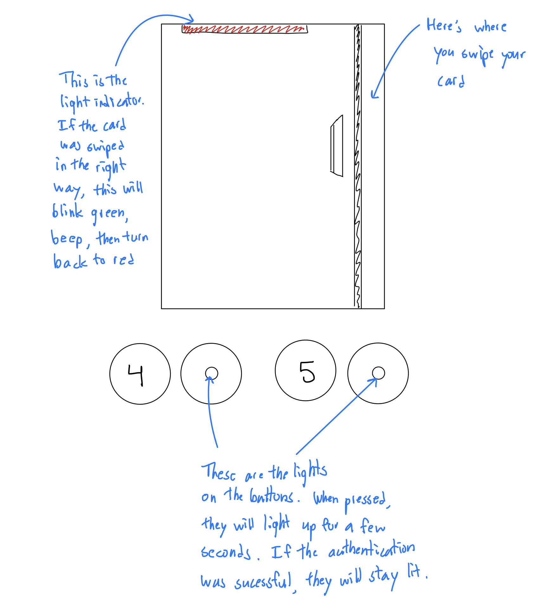
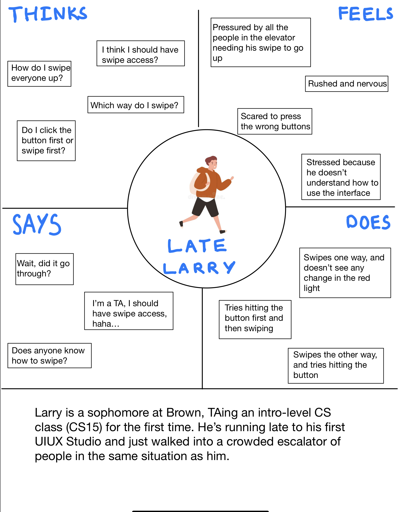
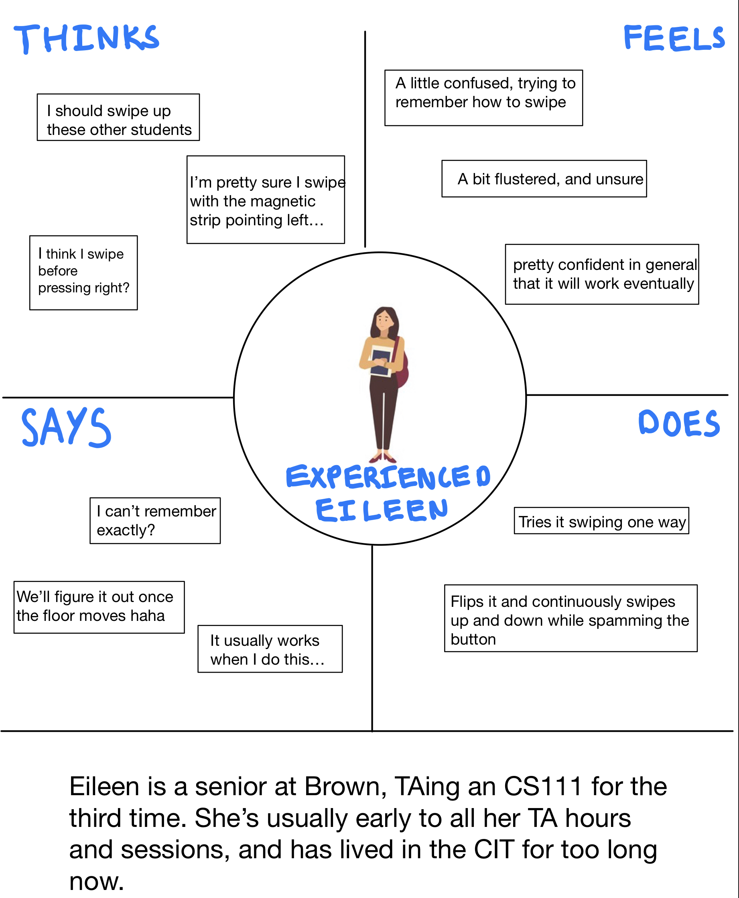
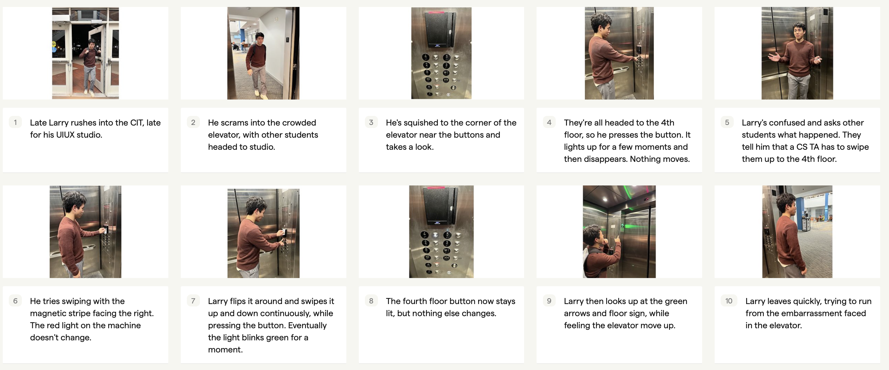

The CIT Elevator
Assignment and Goals
This assignment is about observing real users interacting with an interface (the CIT Elevator).
I’ve interviewed individuals and observed their interactions with the interface.
Additionally, I created personas based on these users, and created a storyboard for one of my personas.
Overall, I came out with important insights on the design and user experience of the CIT Elevator.
Here's the interface and its description

Interviews and Observations
Questions
1) Have you swiped up to another floor using this elevator?
2) How do you interact with the card reader?
3) After swiping your card, what do you look for to know it went through?
4) How do you know if the swipe fails?
5) If the swipe fails, what do you do?
6) Design your ideal interface for authentication in this elevator.
General Responses
- Some users forget whether or not you have to swipe or click the button first.
- Most people end up continually swiping and pressing until it works.
- It’s annoying that the main way of knowing the authentication is successful is the lit up button, because the button always lights up when you press it, only to fade to black again if it was unsuccessful. During that time, the user believes that they successfully swiped it through, only for it to fail.
- There should be another way of authentication, with a tap based system, rather than swiping, or more identifications on how to operate and understand the system.
- Should give access to all CS students for the elevators; it’s annoying for both TAs and students.
Observations
- For new users, it’s difficult to figure out how to use the system for the first time, as there are no clear directions or symbols.
- For experienced users, the way to interact with the system is still troublesome. It’s not intuitive and requires users to think and remember how they used it in the past, usually still requiring multiple attempts.
- Although there is a beeping noise along with combinations of red and green lights, these two combined don’t convey enough information for the user to comfortably understand their interaction with the system.
- Because of this, users wait and rely on other factors such as the white light on the floor button, direction arrow on top of the door, and feeling whether or not they are physically going up to understand the results of their actions.
User Personas and Empathy Maps


Storyboard
